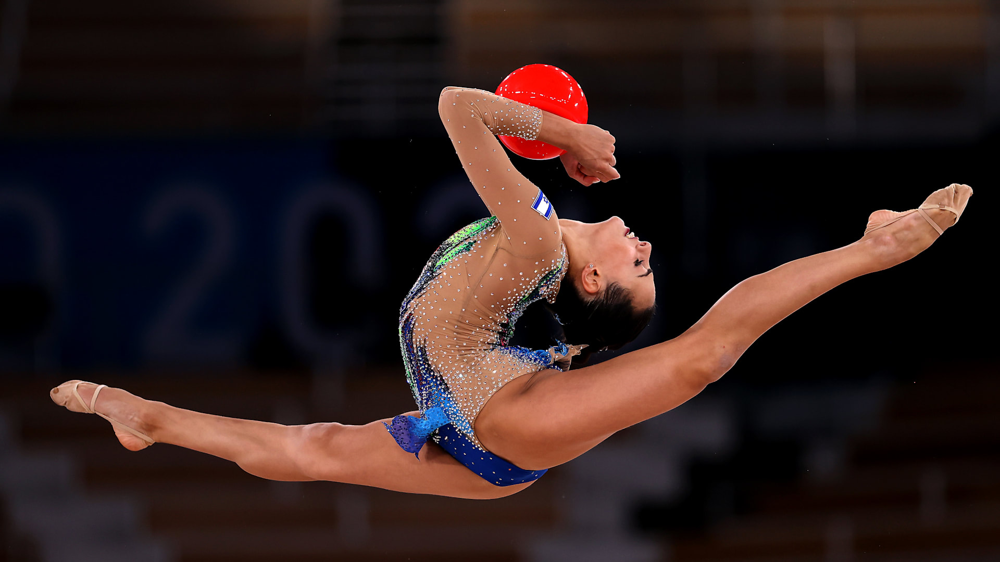

la gimnacia A.
es una disciplina de la gimnasia. El Diccionario de la lengua española define a la gimnasia artística como «Especialidad gimnástica que se practica con diversos aparatos. El ejercicio está constituido en un conjunto armonioso de movimientos que entrelazan posiciones de equilibrio, volteos y saltos, agrupados a un patrón rítmico con fondo musical, que será proporcionado por una melodía ejecutada por un solo instrumento musical, la composición debe ser en total una exploración de todas
historia y origen
En febrero de 1895 William George Morgan, entrenador deportivo de la Asociación Cristiana de Jóvenes (YMCA) en Holyoke, concibió un juego denominado Mintonette como pasatiempo para los miembros de la asociación de mayor edad.13 Se consideraba este juego como una alternativa más suave al Baloncesto, deporte que cuatro años antes también había surgido muy cerca de allí, en Springfield, a solo 16 kilómetros de distancia.
13 Se trataba de un juego de interior por equipos, que guardaba semejanzas con el tenis o el balonmano. Morgan desarrolló también las primeras reglas, las que contemplaban un campo de juego de 25 ft × 50 ft (7,62 m × 15,24 m) y una red de 6 ft, 6 pulgadas (1,98 m) de altura. El número de jugadores era ilimitado, como asimismo la cantidad permitida de contactos con el balón.
En caso de una jugada de saque erróneo, existía una segunda oportunidad, tal como en el tenis.13 Con motivo de una conferencia de todos los entrenadores deportivos del YMCA realizada en Springfield a comienzos del año 1896, Morgan presentó el nuevo juego y encontró buena resonancia entre sus colegas.13 Debido a que la pelota se juega directamente en el aire, sin que toque el suelo (lo que en inglés se denomina volley), Alfred T. Halstead propuso el nombre de volley ball. Esta propuesta se aprobó y el juego se denomina en inglés hasta hoy de igual manera, pero desde 1952 comenzó a escribirse en una única palabra: volleyball.13 Posteriormente, las reglas también sufrieron algunas modificaciones. El primer balón fue diseñado especialmente a petición de Morgan por la firma A. G. Spalding & Bros. de Chicopee, Massachusetts.